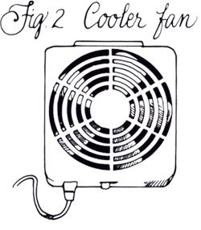

MOTHER'S HANDBOOK
Readying your country homestead for the cold months ahead.
IF YOU ARE NEW TO THE COUNTRY, your first warm season will most likely be the best (if the most labor-intensive) vacation of your life. From late spring till fall you can luxuriate in fresh garden produce and minutes-old hen eggs and can take the morning chill off the house with nothing more than a quick kindling fire in the woodstove. But as the zucchini heap up and you actually begin to tire of vine-ripened tomatoes, you'll notice the sun rising later in the morning and setting earlier in the afternoon.
When you see that first rim of ice around the edges of a November rain puddle, country life starts to get serious. As the cold season progresses, more and more time will go into just staying even with the weather: keeping the home fires and home folks fed, the well flowing and the sink draining. The better you prepare, the easier it will be to get through a country winter with time to enjoy hunting or skiing or skating or ice fishing-or just sitting snug by the fire.
Easily the most common problems on a country place in winter are freeze-ups in the plumbing system. At best, a freeze-up will clog a supply pipe along a cold outer wall and delay the wash. At worst, it can back up sewage and split every pipe in the house; when things thaw, you can have sagging ceilings, stained furniture, shorted wiring and a certified mess on your hands.
Cellar-located central heat will keep cellar-located pipes thawed, but if you plan to stay warm with wood, coal or any other type of space heating, your floors and everything under them will be cold. You could be melting snow for tea and hiking to the outhouse from late winter on unless you take special measures.
The water pump.First, no matter what your heat supply, be sure the water pump is frost free. With a modern well you needn't worry, because your water comes from a submersible push-pump located deep in the well casing. But not all country homes are so up-to-date. Until recently our place was watered by an old, low-pressure Meyers piston push-pump located just beside the well. Sheltering the pump from rain, mud and snow-but not freeze-ups-was a low pump house with a shed roof.
These days water comes from the same old 30 hand-dug, stone-lined well-now connected by twin one-inch copper pipes to a modern suction-type jet pump in the cellar. The supply pipes are buried so deep they'll never freeze, but the pump and attachments are still at hazard in the cold cellar. So I built an inside pump house-a hinged-lidded box-and installed the same device that kept my outside pump from freezing: I wired in a single light socket fitted with a low-wattage light bulb that I keep lit from Thanksgiving to May Day (Fig. 1). It gives of enough heat to keep everything inside from freezing and provides light when I need to check on the pump or pressure valve. To keep from having to change the bulb frequently, I use one of those 40-watt "forever" bulbs sold in mail-order catalogs and some hardware stores.
A neighbor uses the same light-bulb-warmer trick to keep the supply pipes and drainpipes to his north-wall kitchen sink thawed. And I keep a light in the bottom of the back room's jelly cupboard, where the overflow of glass-packed canned goods winters over. I toss an old horse blanket over the cupboard for insulation and have never lost that first jar of pickled beets to freezing.
The pipes. Modern, energy-efficient cold-country homes are designed around a utility core that keeps the water-supply and water-removal systems in the warm middle of the house. But indoor plumbing, central heat and insulation were added as afterthoughts to rural houses built much before the 1920s, and the water systems in old country houses are typically located along outer walls, so are freeze-prone.
When wood-heating the upstairs of my 1796 wood-frame Cape, I keep the worst of the frost out of the cellar with one of those little computer-cooler fans sold in electronics and wood-heat supply catalogs (Fig. 2). Placed in a hole sawed in the floor just behind the main wood-burning stove, and aimed so it blows down, the fan keeps the kitchen plumbing in the center of the cellar from freezing solid.
Pipes in other parts of the house, though-like the bathroom pipes located along the leaky old fieldstone cellar walls-would freeze up without the help of heat tapes. Heat tape is sold in a variety of lengths at any cold-country hardware store. It resembles flat TV antenna wire but is actually two parallel lengths of 110-volt resistance wire embedded in a plastic tape. At the plug end is a thermostatic off-on switch that lets a small amount of current flow when temperatures fall below 40° or 50°F. Usually, a small light indicates whether the unit is on.
Heat tape yields only a gentle warmth (so it's safe for use on plastic as well as metal pipe) but will keep pipes flowing in the coldest weather at negligible energy cost. It must be applied carefully, however.
Install heat tape in open coils (one to three inches apart) along every length of watersupply pipe and drainpipe at hazard in the cellar or along walls of cold rooms. Don't let it twist: Keep the flat side in solid contact with the pipe, or warmth will not transfer efficiently.
Don't let the tape overlap, either, or you'll risk overheating and a fire. Use duct tape or a nail (through the plastic only!) to fasten the free ends of each heat tape securely to a structural member, or use duct tape to fasten it to the pipe itself, and at each pipe bend too. The heat tapes assume a spring shape on the pipe; as they heat and cool they'll slide back and forth if they can, sometimes drawing one loop back on another. Don't let it happen. Secure the tape well (Fig. 3).
If you need to install a number of tapes, don't just plug each one into an extension cord and run the cords to one or two cellar outlets. Too many tapes on one circuit can overload a service wire without blowing a fuse, causing an electrical fire. Install simple in-line outlet boxes as needed to give every tape its own direct access to the main line.
And finally, remember to overhaul your tape setup each year. Check the plastic sheathing for cracks and mouse-gnawings. Secure any coils that have loosened. Replace (don't try to repair) tapes with deep cracks in the plastic or with bare wire showing. The little thermostats will corrode after a while in a dank cellar; if they don't make a crisp click and light up when plugged in (it has to be cold enough to activate them), replace the whole tape.
The sewage system. Obviously, it's important to keep water flowing freely not only into the house but also out once you're through with it.
Freeze-prone sink and tub drains can usually be heat-taped the same as supply pipe. Soil pipe serving toilets and accepting outflow from other drains is large in diameter and hard to clog, but it too can freeze up. The big iron or black-plastic soil pipe that runs out through the cellar wall to the septic tank will be insulated by the soil and warmed at the tank end by heat produced by waste-consuming bacteria. But the run of pipe inside a cold cellar can accumulate a layer of ice with every flush, and sewage outflow can be stopped.
My soil pipe is exposed not only in the cellar but also for several feet out in the crawl space under an unheated shed before it dives belowground. I wrap the in-cellar run with heat tape (coils six inches apart around the six-inch pipe) and put a thick blanket of fiberglass insulation over the portion under the shed. On especially cold mornings, I run hot water down the septic system for a few minutes before anyone so much as brushes a tooth with cold water.
If your country place is an old farmhouse, you probably have leaky windows and doors and poorly insulated walls. Each good blast of winter wind can suck out the warmth, running up your fuel bills and leaving you shivering.
The ideal solution, of course, is to caulk-or replace-the windows and doors and to install modern insulation in the roof and walls and under cold floors. A less permanent but acceptable interim approach is to wrap the house in windproofing. In the old days, black tar paper was tacked around the bottom of the house, the paper's edges held down with strips of inexpensive 1 1/2" X 3/8" X 48" rough wood lath. Lath was tacked on vertically every few feet too. These days, clear plastic sheeting is installed the same way-tacked on with a staple gun, but kept from blowing off with tacked-in-place wood lath (sold in bundles at any lumberyard).
Plastic sheeting is available in rolls of varying lengths, widths and thicknesses (three-and six-foot widths and four- or six-mil thickness are most common in our area). Get the thickest you can find. The thinner it is, the faster sunlight will break it down; then it must be removed before it shreds and blows all over the place. A good quality of sheeting will last two or three years.
I also staple plastic sheeting over unused doors. And even though I have good, old-fashioned wooden storm windows, I doublewrap some of my north-wall windows with plastic sheeting, stapled on and held with lath, inside and out (Fig. 4).
If you heat with wood, you surely know you must clean the stove's flue once a year (Editor's Note: You'll most likely have to do it more often than that!) to avoid chimney fires. How often you should clean it depends on your stove's efficiency, the amount, type and dryness of the wood you burn, and other factors. But the timing of your first trip of the year to the roof or of the visit from your top-hatted chimney sweep should depend on the birds. If you share your countryside with eastern chimney swifts or the western Vaux's swift-small, soot black, swept-winged birds that loop gracefully through the air, chittering as they dive-bomb flying bugs-you must clean out in the fall. Swifts glue their stick nests partway down unused flues in the spring, raise their broods in summer and abandon the nests when they fly to wintering grounds come fall (Fig. 5). The fluffy nest-lining and tinder-dry sticks are just waiting to be ignited by a wood spark-and if surrounded by an accumulation of creosote can start a roaring flue fire. When the swifts vacate, push the nests down and shovel 'em out. Then keep the birds out by capping the flue with hardware cloth late the next spring (unless, like me, you enjoy their aerobatics enough to clean out after them and to refrain from firing up the woodstove on chilly mornings during their nesting period).
In October I broadcast soil-sweetening lime and finished compost on all open land and till it in well. Then, over most of the plot, I sow and rake in my overwintering green-manure crop: winter wheat in our locale (though oats, barley or another plant may be better suited to your winter conditions; ask at the feed store). It will sprout in the coolness and ample moisture of late fall, make some root growth, and peek aboveground if weather is warm, but mainly it will prepare to generate top growth for an early spring till-in.
But a small section of the garden (different each year) isn't fall-planted at all. Before the soil becomes waterlogged in late October, I rake up one or two long raised beds about a foot high and wide, and unroll over them lengths of black-plastic sheeting, weighting the long sides in the ditches at each side of the mounds with old wood planks, and setting rocks along the top of the mounds every few feet so the sheeting won't blow up in the wind (Fig. 6). The next spring, well before the snowbanks along the drive have melted, I can go gardening. This covered and raised soil will be dryer than the surrounding dirt; under the sun-absorbing black plastic it will warm and thaw sooner, and even though the rest of the country is hub-deep in "mud time" gumbo, I can crawl out on the planks, cut slits in the plastic and set in early-early-early greens and Raab broccoli seedlings started inside under lamps. In the unsheeted soil alongside, I even hazard planting a few snow peas.
To be honest, we are so high and cold, and the growing season is so abrupt here in New England, that I don't always gain much on the weather. The peas often rot, and the lettuce just sits shivering for weeks. But in the years when we have a warm spring, I am pulling off a few succulent leaves of fresh salad and nipping tangy mini broccoli heads weeks earlier than anyone.
Fruit trees shouldn't be pruned till they are dead-dormant in winter, but in late fall I trim out any skinny limbs that have cracked under fruit load or look as though they might break under heavy ice, peeling off strips of bark as they go (Fig. 7). All disease-spreading "mummy" fruit too high for the deer to reach are removed and left for them in a stack away from the trees. In the spring, before disease spores or bug eggs can develop, I stomp any mushy remains into the soil or rake them up and cart them to the compost pile.
Young trees with immature root systems and tender bark need protection if they're to safely face their first winter or two. Our strong, ice-crystal-bearing January winds can burn young trunks; a spiral tar-paper trunk wrap from ground level up to the major branches protects and expands as the trunk grows (Fig. 8). Rodents-brown voles, in particular, in our neck of the woods-will burrow around happily under the snow and gnaw the bark of young fruit trees, often girdling them completely. I find that several layers of common kitchen-quality aluminum foil wrapped on the lower two feet of trunk and held on with hemp twine deters the little beasts; perhaps it has the same effect on their teeth as it does (Ouch!) on the fillings in mine.
Wild rabbits can travel on top of the snow, and in a heavy rabbit year will debark your young orchard as high up as they can stand. A loose tube of several thicknesses of old poultry wire wrapped around each trunk (Fig. 9) for the first few years will keep the rabbits honest, though you must remove it each spring to prevent its cutting the expanding trunks. Deer, too, will debark young fruit trees. The only protection I've found effective, short of a high electric deer fence, is Dog Harley. In late fall and early spring, when deer are wandering and forage is scarce, my canine commando spends the night tethered to a big, comfy doghouse at the margin between forest and orchard and keeps the interlopers woofed away.
Livestock enjoy life more in winter than you might think. Moms take the cold months off, as all but fall-mistake youngsters are grown enough to make a living on their own. Bothersome bugs are gone, and with nothing but a nose poking out from a thick coat, it's easier for most farm animals to keep warm in winter's cold than to stay cool in summer's heat. About all they need is adequate shelter from the worst weather, plenty of nourishing feed and ample clean, ice-free water.
It is hauling water and keeping it thawed I that causes most practical problems for new-to-the-country people. Always use wood water buckets or those black rubber buckets from farm supply stores, since an animal's mouth can stick to metal in freezing weather. Rubber won't get chewed up as wood will, and will expand and not fracture when unused water freezes in it. You will need a pair of buckets for each animal so you can carry up one full one and carry back the empty or frozen or stepped-in one.
I secure the bails of rubber water buckets to the shed wall with C screws and keep buckets of water thawed (in all but the coldest weather, when the surface will crust over) with immersion heaters-thermostatically controlled, waterproof stainless-steel rods containing resistance-wire coils on stout light cord-that plug into an electrical outlet and generate heat when the temperature falls below 40°F or so (Fig. 10). Be sure to secure the cord well so a winter-bored animal can't chew on it and get zapped.
A snug stall near the house makes things easier for both man and beast. It needn't be heated-an animal's body heat will do that. But be sure to eliminate drafts by sealing up cracks in the walls and stapling plastic sheeting over any unglazed window openings. Without question, the number one cause of problems with livestock in winter is drafts in inside quarters. Animals in a field will hunker down with their heads into the blizzard so that their rearward-growing outer coats are blown flat to keep in warmth, and healthy stock can survive the most brutal temperatures. But in a coop or stall, drafts can whistle through at high speeds and from all directions, ruffling feathers, hair or fur from odd angles, breaking the insulating blanket. Lowered body temperatures increase susceptibility to frostbite and disease in any animal.
A horse can get by on a daily winter ration of a quart or two of grain, a couple of buckets of water and about one-third to one-half bale of hay. If you figure 270 days from fall to spring, that means you'll need about 150 bales (allowing for waste). Ol' Paint also needs bedding to provide a warm sleeping mat and absorb urine. With a good pitchfork and a willing arm, you can keep a clean stall with only a light layer of bedding over the bare floor. Easiest is to build up a good six-inch-deep base and add to it with the strawy portions of each hay bale over the winter. Once or twice a day you should pitch out "horse apples" and remove wet spots in the bedding.
A rubber bucket won't stick to your animal's mouth in freezing weather.
A milk cow has about the same feed, water and shelter requirements as a horse-except that she needs twice the amount of everything if milking, and inside quarters are absolutely necessary in deep-cold snow country. Bedding is more of a problem too. You don't want a milker sleeping in muck; that delicate udder can develop all kinds of problems. The homestead milk machine beds best on wood chips, sawdust, peanut hulls, corncobs or any other coarse, granu lar material available locally. You'll need to clean out at least once a day, so figure on a dump-truck load or two of litter per cow per winter, and develop a good shoveling arm to keep the stall clean.
The best place for a hog to spend the winter is in your freezer.
Half-wild sheep and yearling beef steers that range on naturally watered pasture can get their fluid needs from snow and can winter in the open just fine if you keep hay available. But it is best to keep pampered homestead hamburger- and lambchops-to-be in the barnyard under shelter, providing open water and a daily grain ration in addition to a full hay manger.
The best place for a homestead hog to spend the winter is in the deep freezer-having been fed from a spring weanling to 150 pounds of roasts, chops and sausage for fall slaughter.
Goats are almost fun to winter; they talk to you constantly during barn chores. I've kept four compatible animals in a big horse stall and found them less bother than a single horse. They will share hay from a single rack and share a heated water bucket too (but be sure you keep it clean or none of them will drink from it). Be sure, also, to keep hooves trimmed well when goats winter in bedding; droppings can wedge into overgrown hoof sheaths and cause hoof rot. It is difficult to remove small goat droppings, so I plump up the bedding with a fork every day-and keep a milking doe's preferred sleeping area especially clean and dry to avoid mastitis.
In late fall, clean the chicken house, scrape the roosts, and soak all surfaces with a feather mite-proofer. I put a layer of straw on the floor and under the roosts for easier cleanup come spring. Then, the poultry can take care of themselves (except for egg-collecting) if the coop is draft-proof-but has a small air vent at the top-and you keep the gravity feeder topped up and the dome waterer thawed. Heater bases for waterers are sold at farm supply outlets (Fig. 11). Plug yours in, make sure the bottom of the waterer is in flat contact with it, and water will flow unless temperatures fall below zero for a day or more running. In that case you may have to bring the waterer inside for a thaw.
Bees, if given a chance, will seal their own hives against the weather and will build a winter nest and food supply in the top sections. Consult other local beekeepers to determine the amount of honey that bees in your area need in order to overwinter; in our locale, a full-sized nest box, or super, with 60 pounds of honey is a bare minimum. I prefer one full- and one half-sized super, though other beekeepers feel that two full boxes are best.
With experience you can heft a hive in early fall and tell how the colony is doing. Any light colony should be combined with a stronger one, or be fed. Be sure to do your manipulations and feeding while the weather is warm and the bees are still in a nectar-collecting and hive-sealing mood.
Once cold weather sets in, you should reduce the hive entrance and place a section of wire cloth over the remaining opening (Fig. 12) to keep out honey-hungry mice. If bears are a problem, bring the hives in close to the house once the bees are in the winter cluster. It's easy then to clear snow from around the hive base during any winter warm snaps so the bees can fly.
There's nothing sadder than a hoe or spading fork, abandoned garden-side in the fall, emerging slowly from the snowpack the following spring, its metal rusted and the gray and dried-out handle ready to break at the waterlogged socket. And nothing is more infuriating than a mower or tiller that won't start in the spring because it was simply rolled into the shed and forgotten the previous autumn. A few minutes spent winterizing your loyal lawn-and-garden helpers is time well invested.
On a sunny fall day after a hard frost, I haul all the hand and power tools down to the house and hose everything well, soaking and removing caked-on dirt. I use a putty knife to chisel the rind of acidic, rust-encouraging plant material from under the mower deck and out of the corners of the tiller and shredder housings. I use a sharp knife to remove the vines and roots wound around the tiller tines and the engine shafts of the mower and shredder; pliant now, the vegetation would dry and ossify over the winter.
Then, restricting the hose nozzle, I blast out the debris wedged between the sheet-metal shroud and cooling fins of the engines; if allowed to dry and bake on, the dirt will cut airflow and retard cooling. When all is dry, I wire-brush off all rust; and either spray-paint or oil down the exposed, soil-burnished steel of all hand tools, tiller tines and the blade and underdeck of the mower (a spray can of light oil makes this chore a snap). Then I wipe the chromed handles and painted sheet metal of my power equipment with an oily rag, to rustproof the surfaces.
A good soaking of tung or linseed oil goes on the wood of all hand tools to keep the handles strong and springy. It's important to slush the stuff on-till no more will soak in-and rub it in with your hands. Pour it into the sockets where metal and wood meet. And be sure to use boiled linseed oil; the unboiled kind never seems to dry past the sticky stage.
I run four-cycle engines till they're warm, drain their engine oil and refill them with good 30-weight oil until the oil level reaches the dipstick-indicated level; or if there is no dipstick, the bottom of the filler tube. Transmission-oil levels are checked and topped up, grease fittings serviced, and drive chains greased (Fig. 13).
Fuel filters, if any, are replaced, and sediment bowls under the carburetors of larger engines are removed and cleaned out. So fuel will not evaporate, leaving gum to clog the carburetor come spring, I drain the tanks of the mower and other small equipment and run them till all the fuel is gone. A quick squirt of rust-retarding spray oil goes inside the fuel tanks, and another goes around the threads where the tank cap screws on.
Air filters are removed: Cartridge-type filters are replaced, and foam types are washed well in solvent, dried and given a light spray of oil. The insides of the filter canisters are wiped out well, and fresh filters are installed.
On large equipment, I fill all tanks, give each a shot of gasoline stabilizer and run the engine long enough so that I can be sure the entire fuel system is filled with stabilized fuel. Then I top the tanks so water won't condense out from the air to pool under the fuel and rust the gas tanks.
I remove the spark plug, wire-brush it well and regap it-.035 for most small engines. (If you aren't engine-handy, purchase a new plug and ask the salesperson to gap it for you-but don't drop it on the way home.)
Then I squirt a few drops of light engine oil into the plug hole, replace and tighten the plug till it's snug, and give the engine a half dozen pulls to coat the cylinder.
This is also a good time to replace worn or badly nicked tiller tines and shredder blades, and to remove, sharpen and balance (or replace) the mower blade.
Finally, I put the summer equipment under cover and haul out the snowblower and snow shovels-equipment that, because I "summerized" it last May, is ready for the coming blizzards, just as the garden gear will be ready when the crocuses begin peeping through the snow next spring.
The more isolated your country place is, the more reliant you will be on your own transportation, so be sure the vehicle will start and go in the hardest weather.
Give your car or truck a complete tune-up and winterization, including a change of oil, fresh filters (fuel, oil and air) and new plugs. Be sure the new engine oil matches your local winter conditions; 10-30 multigrade is fine for most vehicles. Also, test the liquid in the cooling system and-if necessary-add new permanent, glycol-base anti-freeze. While replacing the coolant, tighten the clamps at each end of the radiator and heater hoses (Fig. 14). Clean off any antifreeze-green crud around the hose ends. Later, if the engine is losing coolant and you notice a new buildup of green stuff, you'll know for sure there's an antifreeze leak around the hose fitting.
I like to replace rubber goods in the fall too: new fan belts and windshield wipers every year, and new cooling-water hoses, vacuum tubing and ignition wires every four or five years. I'll spring for a new battery, also, if mine is within one year of its performance limit (that is, if a five-year battery is over four years old).
If I need them, I'll buy new tires in the fall. Radials perform better in snow than bias-ply tires; snow tires with all-surface treads are better still; and studded tires offer the best traction of all.
Good tires or not, I've found that getting stuck on iced roads is inevitable at least once a winter, so in the back of the truck seat and in the car trunk I carry two sacks of the best tire-traction material there is: halite, the rock salt meant to be spread on icy walks. When stuck on an icy grade, a half-sackful front and back of each drive wheel gets me out every time.
I also carry a towing strap and a set of heavy-duty jumper cables. An adjustable wrench, pliers, screwdrivers, a wrench and socket set, fuses, extra headlight and taillight lamps, a disposable flashlight, a few old wool blankets, matches and a supply of the greatest automotive invention since the wheel, a roll of duct tape, completes the kit.
The wind, ice and snow of a winter storm can down trees, knock out rural power and telephone lines and block roads for hours, days, even weeks in some areas. Better to prepare now than to struggle then.
An electricity-independent, in-house source of heat is essential. In addition to firewood for our stoves, I keep a pair of newly wicked kerosene heaters at the ready, plus several days' supply of high-grade white kerosene-in blue-colored five-gallon cans so they won't be confused with the red cans containing gasoline. Unvented kerosene heaters smell up the house, and they may not be the safest heat source. But they won't cause problems if cleaned and tended conscientiously, and they're great at keeping you warm just when and where you need to be warm.
Emergency light is almost as important. Flashlights and candles are good for brief periods, and if you're a camper you may have one or more pressurized-gas mantle lanterns for illumination. However, I prefer lamps that burn nonexplosive kerosene. I've done chores on many an electricityless night by the yellowish, dim but reliable glow of old-style hurricane lamps. Most country hardware stores carry them.
If your kitchen range is electric, have at least one emergency cooker-a gas, wood or camp stove. For lighting heaters, cookers and lamps, keep a reliable fire source handy. Every fall I stock up on disposable butane lighters and keep several scattered around in small-child-proof locations.
A battery-powered radio will keep you posted on weather developments, and a battery-powered portable CB radio is a good idea if your place is well back from a traveled road. Just be sure the batteries are fresh. Make up a medical kit, and buy and study a good first-aid manual too (Fig. 15).
If you don't have hams, venison haunches and smoked fish hanging from the rafters, plus enough home-preserved garden produce to feed you and yours for an extended period, lay in dried or canned meals for twice as long as you think you might need them. Don't rely on frozen foods; the freezer is electricity-dependent. Keep reserve supplies of food for your pets and livestock, too.
Finally, if there is even a slight chance that you will be isolated longer than you care to be, plan for emergency egress. This may be anything from prearranged signals with the local Civil Air Patrol to ready-to-go backpacks and cross-country skis to get you to the nearest traveled road. I keep snowshoes on the wall, and one of the kids' plastic-dish sleds rigged with a human harness, just in case someone is laid up and has to be hauled out. In a handy rucksack are dried food, compass, matches, space blankets and enough other featherweight survival gear to keep two people alive for two weeks in the winter woods. Also, I toss snowshoes and the rucksack behind the seat of my truck any time I have to drive very far from home when a major winter storm is forecast.
Storm or no storm, a winter trip to the gas station or the grocery can take half a day, so I learned early on to lay in, in quantity, everything from dog food to roofing nails. I keep several five-gallon cans of gasoline filled for the snowblower and vehicles. There is always an extra unopened 100-pound sack of animal feed waiting in case the main supply gets low. And, in the larder, there's always an extra box of salt, a sack or two of sugar; on the utility shelves, a package of fuses and an extra jet for the oil burner; in the study, a whole ream of paper, a fresh box of crayons and a brand-new, unopened board game for the kids; in the shop, everything from a large spool of stout cord to extra links for repairing the chain saw.
When you're prepared-really prepared-winter in the country can be downright enjoyable. Don't fret about being cut off during bad weather from what passes for civilization. Most places, your isolation will be brief. So enjoy; don't dread it. Be ready for the very worst; then, if you're like me, you can look forward to the challenge of living luxuriously under whatever conditions Mother Nature may force upon you. And remember, spring will return eventually.
|
ILLUSTRATIONS BY KAY HOLMES STAFFORD |
 |
|
|
|
|
|
|
|
|
|
|
|
|
|
|
|
|
|